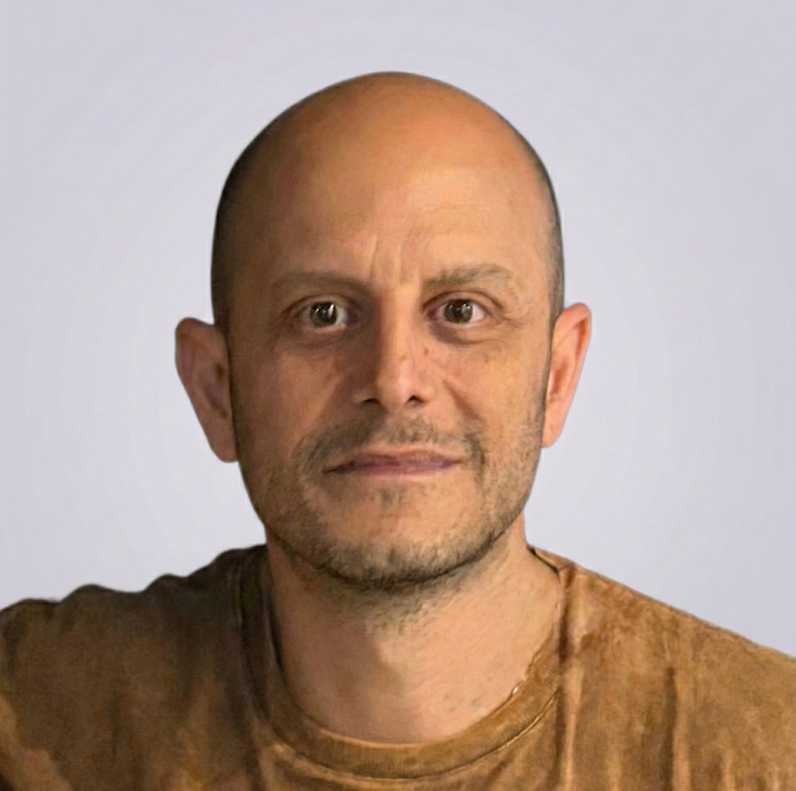

2026
Maestría en Inteligencia de Datos Orientada a Big Data
UNLP
Currículum vitae · La Plata, Argentina
Mg. en Inteligencia de Datos
Ciencia de datos e IA · Docente · DBA Oracle

Docente de Aprendizaje Automático en la Universidad Nacional de Luján (UNLu), con formación de posgrado en inteligencia de datos y procesamiento del lenguaje natural (NLP). Mi actividad académica se centra en modelos de lenguaje abiertos y su adaptación a dominios específicos.
Mi trabajo de tesis, “Estrategias de adaptación eficiente para modelos de lenguaje abiertos”, compara el ajuste completo (FFT), técnicas PEFT (LoRA, QLoRA, DoRA y QDoRA) y GaLore sobre modelos basados en la arquitectura Transformer, mediante experimentos en el entorno HPC Clementina XXI.
Cuento además con más de 25 años de experiencia en IT, especialmente en la administración y optimización de bases de datos Oracle, redes y sistemas Linux y Windows.
UNLP
UNLP
UNLP
UNLP
En las actas de las XIV Jornadas de Cloud Computing, Big Data & Emerging Topics (JCC-BD&ET)
Póster presentado en Second South American NLP School (SANLPS 2026)
Artículo en revisión en la revista Journal of Computer Science & Technology (JCS&T)
Universidad Nacional de Luján
División Computación, Departamento de Ciencias Básicas.
Poder Judicial de la Nación Argentina
Consejo de la Magistratura, Dirección General de Tecnología.
Universidad Nacional de La Plata
CeSPI
Senasa
Otero Hogar
Buffa Sistemas S.R.L.
Impartí el curso de capacitación para Administradores de Sistemas Linux.
Internet Winds AG SA
Administrador de sistemas y redes (Octubre 2006 - Octubre 2007)
Coordinador de mesa de ayuda (Octubre 2005 - Septiembre 2006)
Técnico de mesa de ayuda (Septiembre 2004 - Septiembre 2005)
NumPy, Pandas, Seaborn, Scikit-learn, TensorFlow, PyTorch, Keras, spaCy, Hugging Face Transformers, Spark, Hadoop, PEFT, GaLore.
Orquestación de cargas de trabajo mediante Slurm en entornos de supercómputo como Clementina XXI.
Oracle DB, Oracle Data Guard, Oracle Exadata, Oracle RAC, Oracle EM, Oracle Data Pump, ETL, PostgreSQL, MongoDB.
Routing, Firewall, Enlaces, VPN, Proxies, BGP, QoS.
GNU/Linux, Windows Server.
C, Python, SQL, PL/SQL, Bash Scripting.
Fundación PROYDESA
Fundación PROYDESA
Fundación PROYDESA
Avanzado